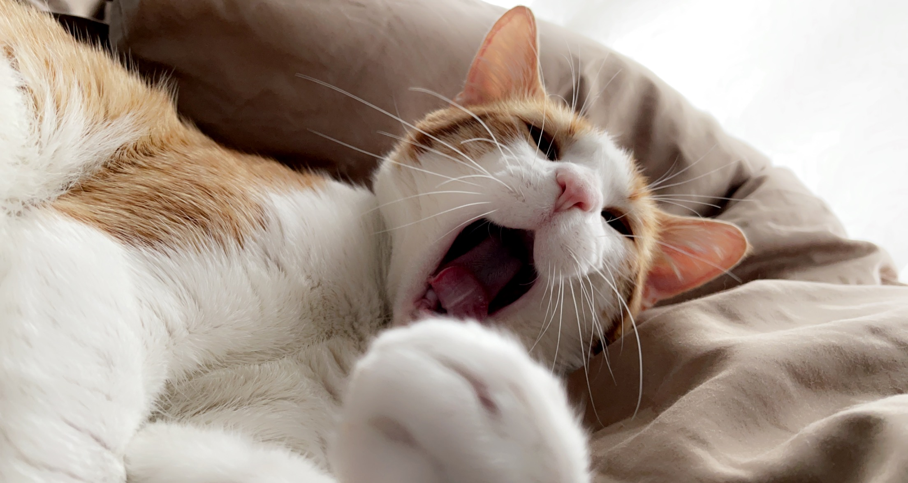

Although cats like to sleep and relax, Onji is a very playful and active cat. Throughout the day, he does many things. He keeps him entertained between his multiple long naps. Some of his favorite activites are bird watching, playing hide and seek, going out for walks, killing bugs and so on.
Bird watching
Bird watching is one of his top favorite activites. He sits by the windows for long period of time everyday and every night to watch birds. He sometimes falls asleep while bird-watching. He also likes to watch people walking on the street and sometimes he will meow at them.
Going for Walks
This is his top favorite activity. He loves going out for walks. He likes walking on grass and eating it. His personality completely changes from sweet and affectionate to wild and feisty when he is outside in the lawn. He starts chasing birds, butterflys and bugs. It is very difficult to bring him inside the house. The only way he can be brought inside is through treats. Even then, he sometimes refuses to go inside the house.
Playing Hide and Seek
He loves to play hide and seek with his humans. He will hide behind a wall and peek his head. After every peek, he decides to move closer and jumps on his humans. Then he runs back to his hiding position to repeat the same thing. He can play this as long as his humans get tired.
Sleeping
Onji sleeps for 15 hours at the minimun. He likes to sleep all day and likes to stay up at night. This is natural since cats are nocturnal creatures.
Eating
Onji eats a lot. After his each nap, he likes to eat which is a lot since he takes several naps throughput the day. He probably has a high metabolism because he does not get fat despite eating caloric surplus.
Pictures of Onji
Below here are some pictures of Onji:


- 